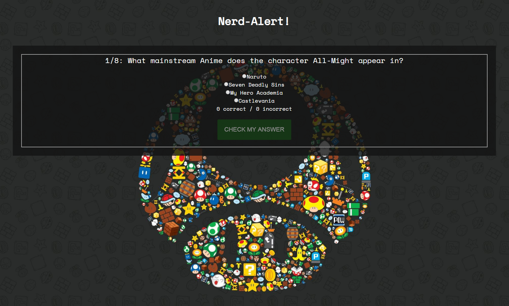
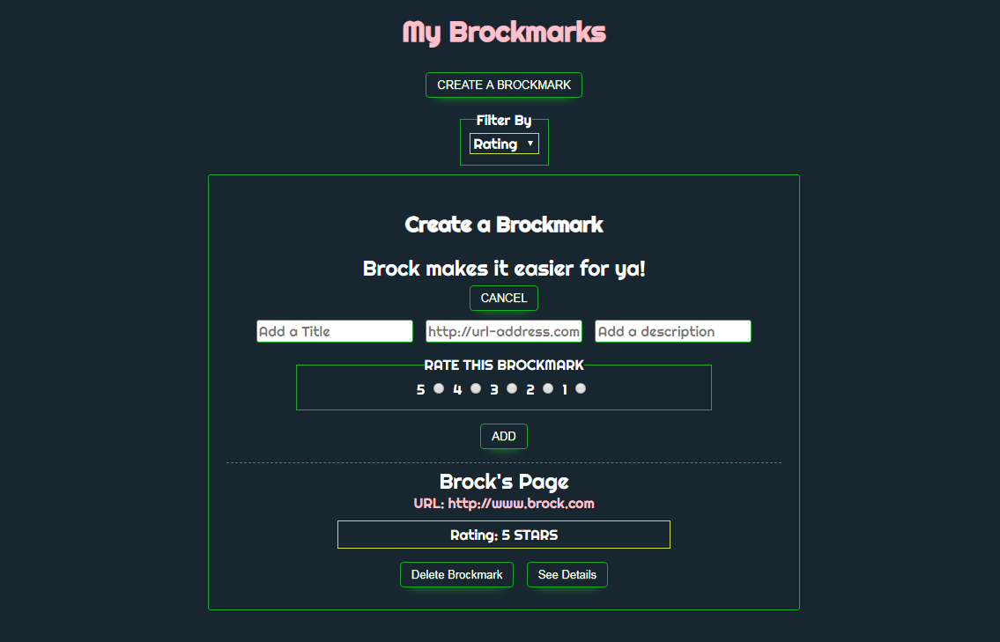

I'm Brock, a Front End Developer based in Asheville, NC.
Scroll down to see what I can do!Projects
Nerd-Alert!
This app allows a user is able to navigate through a set of questions and is given feedback depending on the outcome of the quiz. The user also has the ability to restart the quiz and try again.
Brockmark
This app is a simple Brockmark (bookmark) creator. Allows the user to add, delete, visit, and rate Brockmarks.
Wanna know a little bit more about me?
I am currently a front end developer and graduate from the Savannah College of Art and Design. I've gotten many opportunities to work on amazing projects such as the HBO Game of Thrones viewers guide in season one! A project that won our team a Primetime Emmy Award for Interactive Web Design! I love programming and the challenges it brings. I'm a very critical thinker and tackle all of my problems head on and without hesitation. When I am not programming, learning, or trying to keep up with how fast the world of technology changes and evolves, you can find me playing video games, listening to music and going to shows, offroading in my old wrangler, or playing with the dogs amongst other outdoor activities. I also love to garden and keep my ever growing collection of plants happy and healthy, even the sassy ones that dont like to be moved, watered, or touched often.